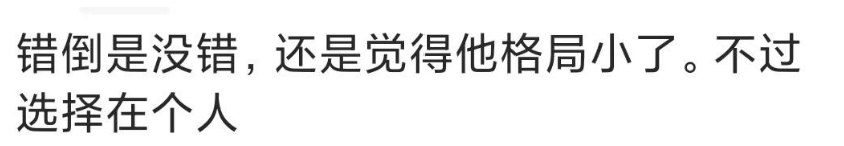

千万别做“格局怪”
原创 V姐万事屋 V姐来了 2022-07-04 18:29 发表于江苏
原文链接(长) 原文链接(短)
Hi, 我是V姐。
这周我都在外面出差，今天在苏州。
苏州是我非常喜欢的城市，园林文化，小桥流水，喝喝茶听听评弹，来一碗三虾面。
即使住在现代气息十足的金鸡湖畔，我还是找了一家中式风格的酒店。
摩天大楼拐进来，就是白墙灰瓦的庭院。
下午坐在房间里，一边喝茶一边写东西，工作但不上班，是我小时候的理想，现在基本实现了。
前几天写了一篇文章， [多一个选择，总是好事](http://mp.weixin.qq.com/s?__biz=MzI1NjQ2ODIzMg==&mid=2247486070&idx=1&sn=c8818c5ab210068da82964949e403369&chksm=ea277e11dd50f7076ed514e3a4a623c600d850d88b0e3dd6ea22f544e866b3de93ea4be96386&scene=21#wechat_redirect)，讨论高考雇佣兵全同学，发现后台的留言，很有意思。
有一类朋友，持有的观点是：【 **_他这是浪费天赋，应该让自己待在更有价值的地方_**】。
他应该去成为钱学森，于敏，屠呦呦，不该为了一年100万在做题。
这类朋友想法很好，只是比较天真。
考上清北，距离钱学森，于敏，屠呦呦到底有多远？
清华毕业生，21年就业报告显示，7成进体制。其中分流毕业生最多的是做老师，占清华毕业生比例21.5%。
北大也一样，21年本科生里，有26%选择去做中小学老师，是就业占比最多的行业。
科学领域的大家，当然值得钦佩，令人向往。如果现在让一个年轻人在成为钱学森和一年100万之间选，我相信没人会选后者。
可问题是，他对于自己的志向，天赋级别，他不比网友清楚吗？
说句老实话，对于科研稍微有了解的朋友都应该知道，从清北学子到钱学森，难度不亚于农民工考上985 。
你咋不鼓励农民工苦读20年，去考985呢？
因为农民工没法去苦读，他要挣钱，他全家要生活啊。
清北学生也一样，人家也是人，也有家人，也要生活。
一个人，有能力，又愿意为国为民，历史和人民自然会记住他，给予最崇高的礼遇。
一个人，做事的出发点，是改善当下自身和家庭的生活，是不是就要被道德绑架呢？
我很疑惑，部分网友，一边整天讲要尊重个人意志，尊重人权，一边又对别人的人生选择横加指责。
如果他聪明，成绩好，就必须要走某一条路，那么你笨，成绩差，就理应去做耗材，这个逻辑是不是同样成立呢？
所以我们上一篇的核心，是说非强迫状态下，自愿交易，多一个选择，总是好事。
大家都对别人宽容一点，自己的选择也会更多。
后台还有一类观点，是说【 **_这个同学格局太小_**】。

我发现一类朋友，大概率很年轻，非常喜欢谈格局。
格局是即道德的大帽子之后，对于看不顺眼的人，又一个无脑评价的大杀器。
东方甄选火了之后，记者去采访俞敏洪，他说：
“ **事情做成了，就是大战略大格局，没做成，啥也不是**。”
老俞话说得很随和，这就是做实事的态度。
很多朋友觉得谈搞钱，就是没格局。
讲精神聊文化，就是有格局。
这些格局怪们，纯粹是被文艺导师们忽悠瘸了。
《大明王朝1566》和《走向共和》两部神剧，讲王朝的兴衰变革，格局够大吧？
开篇的矛盾在哪里呢？
在钱。
《大明王朝1566》开头，就是内阁在商议，沿海有倭寇，北方有鞑子，东南闹水灾，国库亏空，左支右拙，这才有了后面的改稻为桑，抄家沈一石。
《走向共和》的开头，北洋水师要军费，慈禧又要修园子，李鸿章只能卖官鬻爵去筹钱。
包括《雍正王朝》的开头，黄河发大水，四阿哥筹钱救灾，才引发跟朝臣的矛盾。
你看，一个帝国的内阁宰相阿哥，都在为银子发愁，想尽办法筹钱。这个过程里有没有灰色的东西，有没有跟老百姓淳朴的道德观相冲突的东西，肯定有嘛，那是不是就不做了？
肯定不行，不做帝国死得更快。
这些事情到了部分网友这里，搞不好大手一挥，没格局。
《红楼梦》里，王熙凤精明算计，维持贾府的收支，才能有贾宝玉琉璃世界白雪红梅烤鹿肉的浪漫。
格局怪们个个要做贾宝玉，晶莹剔透，不染世间尘埃，哪里看得上王熙凤。
空谈格局是最容易的事情，具体到你要承担的责任，马上就不轻松了。
你怎么知道那个反复高考的同学，他没有更想做的事情呢？或许他只是缺钱，有了几百万启动资金，他也有更大的理想呢？
今天中午我在苏州见了一个自己创业，做电子工程的朋友。他刚刚结束跟中芯国际的项目，本人是苏州大学辍学，自己不想读了，现在公司做得非常好。老粉丝应该知道，统一老师也是北航研究生辍学，不想读了。
世界上的路，本来就不是只有一条。读大学，就是格局大，读大学，是唯一的上升通道，这真是普通人应该推崇的吗？
对于大部分读不了大学的人来说，才是不公平的。
说到底，你做了什么，为这个社会输出了什么，才是最要紧的。
我年轻的时候，也喜欢指点江山，轻易评价别人的格局，后来发现落到自己身上，能力越大，越不要轻易谈格局。
满脑子琢磨的，就是这个月营收要加加油，员工工资得按时发，客户满意度要维持住，业务要怎么扩大一下。
你要说格局，最大的格局显然是为国为民。国家现在最需要什么？
消费。
最大的消费是什么？
买房。
你努力挣到钱，买房消费，等于服务业，工业上下游你都出力了，国家谢谢你，大格局。
可是买房容易吗？
不容易的。
所有的大格局，都是不容易的，都是要咬牙流汗，干脏活累活的。
但是呢，所有的空谈大格局，都是容易的。坐在那里，看不上他，看不上你，就可以了。
格局这个东西，跟道德一样，最好用来约束自己，不要用来批判他人。
站在格局的制高点上，并不能让你高人一等。
真的大格局的人，很少评判陌生人的格局。
所谓万丈高楼平地起，千万别做格局怪。